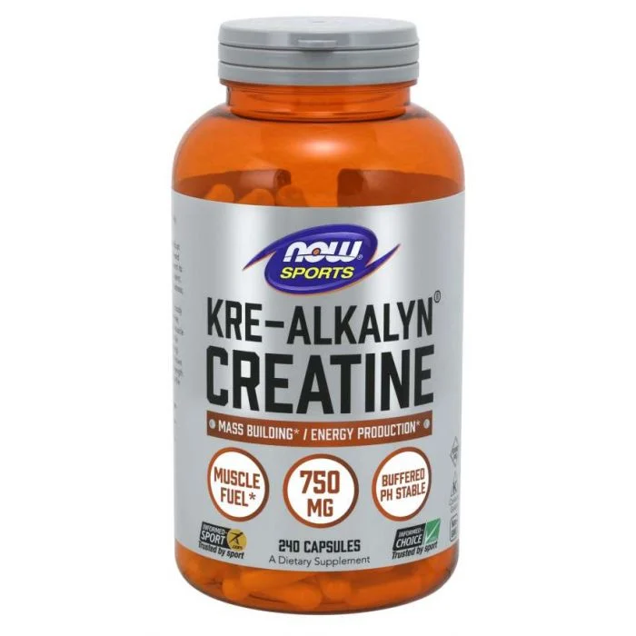
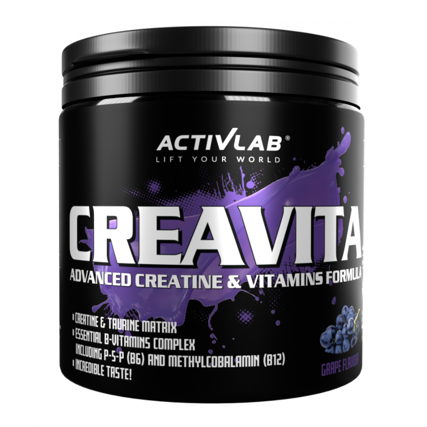

Tren
Mama féle Tren
Az L-karnitin a legnépszerűbb anyagcsere fokozók közé tartozik. Fő feladata a zsír (zsírsavak) eljuttatása a sejtek mitokondriumoknak nevezett erőműveibe, ahol aztán elégetve energia lesz belőle. Ennek ellenére a legjobban fizikai aktivitással és megfelelően összeállított étrenddel együtt működik.
12995 Ft
Finom Tren

Az Appetite Control mindazoknak szól, akik hatékonyan szeretnének fogyni, és szabályozni akarják állandó éhségérzetüket, valamint az édes és sós ételek iránti sóvárgásukat. Az összetevők között szerepel például egy fehérbab-kivonat, amely bizonyított szénhidrátblokkolóként ismert. Mindemellett tartalmazza a természetes HCA zsírégetőt és krómot is, amely pozitívan befolyásolja a normál vércukorszint fenntartását.
7545 Ft
Sima Tren
A The Ripper egy finom ízű nagyon erős és hatékony zsírégető. Gyorsan ható formuláját koncentrált zsírégető összetevők alkotják, melyek segítenek a zsírégetés, az éhségkontroll és a tiszta, állandó energia biztosításában.
13999 Ft
Álmodozó Tren
A Karnitin TABS az egyik legnépszerűbb anyagcsere fokozó. Fő feladata a zsír (zsírsavak) eljuttatása a sejtek mitokondriumoknak nevezett erőműveibe, ahol aztán elégetve energia lesz belőle. Ennek ellenére a legjobban fizikai aktivitással és megfelelően összeállított étrenddel együtt működik.
5000 Ft
Bika Tren

A Lipo 6 Black Ultra concentrate egy forradalmian új zsírégető, mely hozzásegít a rohamos és gyors zsírégetéshez. Olyan egyedülálló anyagot tartalmaz, amely erősíti a hatékonyságát, és ezenkívül ez a zsírégető még hosszabb szedés után sem hagy alább a hatékonyságával. A hatékonyságát és teljesítményét a gyors zsírlebontásnak köszönheti.
22899 Ft
Szeretet Tren
Az Animal Cuts egy komplex anyagcsere fokozó, amely számos növényi kivonatot tartalmaz, köztük koffeint, nootropikumokat és adaptogéneket, valamint más, a kiváló minőségű anyagcsere fokozókban népszerű összetevőket. Ezeket az anyagokat nyolc funkcionális komplexbe csoportosítják. Az Animal Cuts tehát egy nagyszerű kiegészítő, amely fogyókúra alatt is használható.
0 Ft
Feherje
Anabolikus Fehérje

A True Whey egy tejsavófehérje-koncentrátum (WPC), amely az egyik legnépszerűbb fehérje. Magas fehérjetartalmával hozzájárul az izomtömeg növekedéséhez és fenntartásához. Ezen túlmenően kiemelkedik gyors felszívódásával, könnyű emészthetőségével és azzal, hogy természetesen gazdag esszenciális aminosavakban (EAA), beleértve a BCAA-kat is. Ennek eredményeként nagyszerű forrása a kiváló minőségű fehérjéknek, amelyet edzés után vagy a bármely más napszakban is lehet fogyasztani.
3499 Ft
Mars Fehérje

A Formel 90 Protein egy többkomponensű fehérje, ami 4-féle, szójából, tejből és tojásból származó fehérje egyedülálló keverékét tartalmazza. Kiváló minőségű fehérjeforrás, ami hozzájárul az izomtömeg növeléséhez és védelméhez. Emellett B6-vitamint tartalmaz, ami segít csökkenteni a fáradtságot és a kimerültséget. Remek választás edzés után, de a nap bármely szakában fogyasztható.
12995 Ft
Mutáns Fehérje
A Mutant Whey egy prémium minőségű fehérje, amely 4 fehérjetípus kiegyensúlyozott keverékét tartalmazza a maximális hatékonyság érdekében. A tejsavófehérje koncentrátum, foszfolipid koncentrátum, izolátum és hidrolizátum kombinációját tartalmazza. Magas fehérjetartalommal rendelkezik, ami támogatja az izomnövekedést és -fenntartást, valamint a csontok egészségét. Szabadon élő, fűvel táplált (grass fed) tehenek tejéből készül, és ízletes.
11999 Ft
Vega Fehérje

A szójafehérje izolátum az egyik legnépszerűbb növényi alapú fehérjepor. Aminosavspektruma leginkább a tejsavófehérje-poréhoz hasonlít, ezért különösen népszerű a vegánok körében. Ezért nem csak a növényi alapú étrenden élő sportolók élvezhetik az izomtömeg növekedését és fenntartását segítő tulajdonságait. Remekül ízlik fehérjeturmixban, desszertekben és más édes ételekben.s
6000 Ft
Szecsuáni Fehérje

A Rizsfehérje a növényi alapú fehérjeporok közé tartozik, és alacsony cukortartalmával tűnik ki. Ez egy rizshidrolizátum, amely ízesítéstől függően akár 79%-os fehérjetartalommal is büszkélkedhet. Ennek köszönhetően segíthet hatékonyan fedezni ennek a makrotápanyagnak a bevitelét. Ez a fehérjepor remek ízű, ha edzés utáni fehérjeturmixként fogyasztjuk, vagy hozzáadhatjuk zabkásákhoz, smoothie-khoz, desszertekhez és egyéb ételekhez, így könnyedén növelhetjük azok fehérjetartalmát.
6299 Ft
Mutáns Gép
Az Animal Flex azok számára készült, akik megfelelően szeretnék ápolni az ízületeket és a teljes mozgásszervi rendszert. A termék alapja 3 hatóanyagból áll, konkrétan glükózaminból, kondroitin-szulfátból és MSM-ből. Ezeket növényi kivonatok, valamint válogatott vitaminok és ásványi anyagok egészítik ki. Az aktív emberek, a hivatásos sportolók és az idősebbek, akik számára fontos a mozgásszervi rendszer egészsége, mindannyian élvezhetik az ízületi táplálékkiegészítők előnyeit.
10999 Ft
Vitamin
Complex Vitamin

A Vitality Complex egy funkcionális táplálékkiegészítő a mindennapi egészség és vitalitás megőrzéséhez. Ez a táplálékkiegészítő 24 gondosan válogatott aktív összetevőt tartalmaz, köztük 10 vitamint, 5 ásványi anyagot és emésztőenzimeket. Olyan mikrotápanyagok komplex keverékét tartalmazza, amelyek részt vesznek olyan létfontosságú testi funkciókban, mint a regeneráció, az emésztés, az immunreakció és az idegrendszeri aktivitás.
5699 Ft
Fontos Vitamin

A D3-vitamin 2000 IU a D-vitamin, más néven kolekalciferol legjobban hasznosítható formája. Támogatja az immunrendszert, a csontok és a fogak egészségét, valamint a megfelelő izomműködést.A D-vitamin bevitelt nemcsak a sportolók fogják értékelni, hanem bárki, aki maximálisan támogatni szeretné egészségét.
3699 Ft
Gyerek Vitamin

A C-vitamin 1000 mg egy L-aszkorbinsav (C-vitamin) tartalmú táplálékkiegészítő könnyen lenyelhető tabletta formájában. Ez az alapvető fontosságú vitamin közismerten számos biológiai folyamatban vesz részt a szervezetünkben. Hozzájárul például az immunrendszer, az idegrendszer és a psziché megfelelő működéséhez. Hatásainak köszönhetően népszerű a sportolók, az aktív életmód kedvelői, valamint mindazok körében, akik szeretnék elősegíteni az általános egészséget és vitalitást.
2999 Ft
Puncsos Vitamin

A D3-vitamin 2000 IU a D-vitamin, más néven kolekalciferol legjobban hasznosítható formája. Támogatja az immunrendszert, a csontok és a fogak egészségét, valamint a megfelelő izomműködést.A D-vitamin bevitelt nemcsak a sportolók fogják értékelni, hanem bárki, aki maximálisan támogatni szeretné egészségét.
12999 Ft
Férfi Vitamin

Az Omega-3 eikozapentaénsavat (EPA) és dokozahexaénsavat (DHA) tartalmaz. Ezek a halolajban megtalálható egészséges zsírsavak közé tartoznak. Hozzájárulnak a megfelelő szívműködéshez, míg maga a DHA emellett önmagában hozzájárul a látás egészségének megőrzéséhez, és az optimális agyi funkciók fenntartásához. Az omega-3 zsírsavak segítségével hatékonyan gondoskodhatsz egészségedről.
7999 Ft
Hölgy vitamin

A Magnézium-kelát (biszglicinát) étrend-kiegészítő kapszula rendkívül gazdag magnéziumban, amiből a kivételesen jó felszívódású kelát formának köszönhetően a legtöbbet hozhatod ki. A magnézium számos fontos szerepet tölt be a szervezetben – segít többek között mérsékelni a fáradtságot és a kimerültséget, valamint hozzájárul az idegrendszer és az izomzat optimális működéséhez.